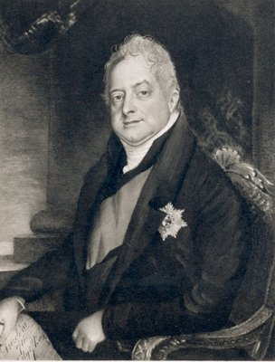

Sunday, September the 1st, 2013
back to: title, date or indexes

. . . that very excitable, choleric, good-natured old gentleman, with his popping, bobbling gestures, his habit of exploding into a room rather than entering it, his obstinacy allied so strangely with extreme changeableness, his ideas that floated in and out of his mind as if they were blown by a sea-gale, his head shaped like a pineapple, and his eyes that floated on the surface of his face as if they were bubbles. Mr Greville remarked that “King William had considerable facility in expressing himself, but what he said was generally useless and improper”.
King William IV, described by Edith Sitwell in Victoria Of England (1936)